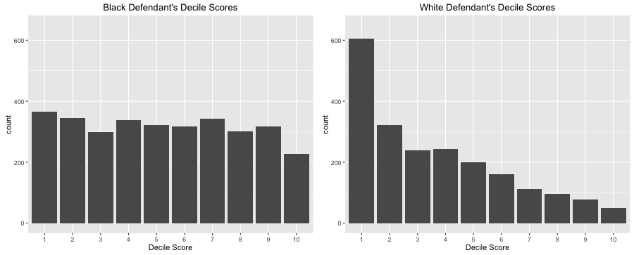

Humanizing Data
Why People Matter More Than Metrics
The Problem
Today’s world is all about quick and simple. As AI and other technologies advance, we are able to accomplish increasingly impressive feats in less and less time. And while that has certainly been the case in the data science field, it’s also introduced the danger of oversimplifying the data we are working with.
Just as important as pretty visuals and tidy data is a deep understanding of the real people behind the numbers. Understanding the individuals represented in each dataset and the human lives that could be affected by your analyses is what really sets an ethical data scientist apart from the rest.
The Why
Taking time to humanize datasets, well, takes time! It requires flexing muscles and practicing skills that may feel a little rusty or nonexistent at first. So why bother? Wouldn’t it be so much easier to plug in the numbers and be done? There are countless reasons to slow down and understand the people behind the numbers, one of the most important being the ethical ramifications of not engaging in this process. Let’s look into some personal and real-world examples that illustrate some of the potential outcomes of taking your time to know the people vs. just running the numbers.
The Benefits
I currently work as a student assistant in the BYU-Idaho Executive Office. As part of my job, I’ve recently had the opportunity to work closely with the president of the university in his efforts to increase donations to the university. Over the past year, the university has seen a 62% increase in said donations. What, you might ask, has led to this increase? While there are certainly many factors at play here, I have been overwhelmed by President Meredith’s ability and insistence on seeing the individuals behind the numbers.

On top of the typical crazy schedule of a university president, President Meredith makes time to call, write letters to, and visit with many of those individual donors. He knows them by name and makes a tremendous effort to create personal relationships with them. This is not something that he reserves solely for donors. He strives in all his interactions to see students, faculty, and staff as more than just numbers and statistics but as real people with real value.
In multiple meetings with the president concerning donations to the university, I have watched as he’s gone name-by-name through the data and learned all he can about each individual. While he loves data and makes data analysis a priority, he does not forget or take for granted the people behind each data point. And it has led to incredible results for this campus.
The Avoided Downfalls
Now that we’ve discussed one potential benefit, let’s take a look at some of the problems that arise when people fail to take the individuals into consideration.
One popular example is the Correctional Offender Management Profiling for Alternative Sanctions (COMPAS) Recidivism Algorithm. This algorithm determines the likelihood of someone becoming a repeat offender, and is used to make informed decisions about things such as sentencing and parole. It was first developed in 1998, and has been used to assess over one million offenders. However, there has been a significant amount of controversy surrounding the ethics of this algorithm.
A 2016 ProPublica investigation into this algorithm found an alarming amount of bias, specifically in regards to the race of the offender. The following chart included in their report shows the distribution of COMPAS decile scores (the likelihood of being a repeat offender). Each of the individuals represented in this data were analyzed with the COMPAS algorithm and had not been arrested for a new offense within two years.

Clearly, there is a shocking tendency for the algorithm to give black defendants a higher decile score. These charts specifically show us that these scores are just wrong. The worst part of all of this is that this algorithm is being used to determine sentence length, sentence severity, and possibility for parole. It is having a real impact on millions of families and individuals. And it’s not unique in its bias!
There are countless examples of this: algorithms that make decisions based on real data that has been impacted by decades of social prejudice and injustice. While the data scientist behind these algorithms may not be the problem, they can certainly be part of the solution. And so can you! Let’s dive a bit into what we can do to help in the humanization process.
The How
So, how do we ensure that we see the people behind the data? It starts with a shift in mindset—a conscious effort to prioritize people over mere numbers. Here are a few ways to begin integrating this perspective into your work:
Ask the Right Questions
Before diving into an analysis, take a step back and ask: Who is represented in this data? Whose voices are missing? How was this data collected, and what biases might exist?
Go Beyond the Numbers
Data can only tell part of the story. Whenever possible, seek out real experiences that bring depth and context to the figures you’re analyzing. If you’re working with healthcare data, take time to understand the realities of the patients behind the statistics. If you’re analyzing student performance, consider the challenges those students face beyond just their grades.
Think About the Impact
Every data-driven decision has real consequences. Before publishing an analysis, take a moment to reflect on who benefits from your work, who might be harmed by it, and what steps you can take to ensure fairness and accuracy.
Bring Stories Into Your Work
Data is powerful, but stories are what move people. Whenever possible, pair your insights with real-world narratives that remind your audience of the human experiences behind the numbers. This not only enhances understanding but also encourages more ethical decision-making.
Remember: Data Represents People!
At the end of the day, data science isn’t just about numbers—it’s about people. Every data point represents an individual with their own experiences, challenges, and aspirations. Keeping this in mind will help you approach your work with greater care, responsibility, and empathy.
Conclusion
Don’t get lost in the sauce! As a data scientist, you have the power to shape lives and have a real impact. Even if you don’t change the entire world, your work can still have a profound impact on countless individuals and families. Yes, it’s important to work efficiently and get things done. But never forget the why, and more importantly, the who behind every project you work on.